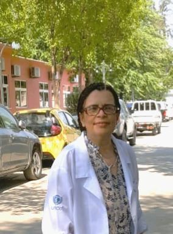

Des décennies d'expérience pratique en santé maternelle et infantile, au Brésil et dans plusieurs pays d'Afrique.

MScIH (Royaume-Uni), BSc (Brésil), RN (Brésil/Royaume-Uni) — Consultante internationale en RMNCAH+N
Regina Pereira da Silva est diplômée en soins infirmiers et en obstétrique de l'École d'infirmières de l'UFMG et est infirmière diplômée au Royaume-Uni. Elle est titulaire d'un master en santé internationale de l'Institute of Global Health and Development de la Queen Margaret University, à Édimbourg, en Écosse, avec un mémoire sur les politiques publiques, le VIH, le sida et l'allaitement maternel en Afrique subsaharienne. Elle détient un diplôme de santé publique de la Glasgow University Medical School et s'est formée à l'allaitement maternel à l'International Centre for Child Health de l'University of London, en 1993. Depuis 38 ans, elle travaille dans le domaine de la santé maternelle, néonatale et infantile, à l'échelle internationale depuis les années 1990, et a publié de nombreux travaux.
Au cours des 10 dernières années, elle a travaillé comme consultante indépendante pour des agences internationales en Afrique de l'Ouest, centrale et australe, dans des programmes de santé et de nutrition, notamment la nouvelle version 2018/2020 du Baby-Friendly. Elle a travaillé en étroite collaboration avec des femmes enceintes, des mères, des pères, des nouveau-nés, des nourrissons, des adolescents et des professionnels de santé dans des hôpitaux et des centres de santé à travers l'Afrique, souvent dans des contextes aux ressources limitées et à forte pression. Elle a également été consultante nationale auprès du ministère de la Santé du Brésil, animant des ateliers dans dix États brésiliens sur le soutien à l'allaitement sur le lieu de travail, et a collaboré avec des ONG internationales et avec le programme BetterBirth d'Ariadne Labs, à la Harvard T.H. Chan School of Public Health.
E-mail : rds@mchfs.org
Mentore
Biographie complète à venir — sera fournie par l'équipe.
Profils des intervenants invités à venir — cette section listera les orateurs au fur et à mesure de leur confirmation.